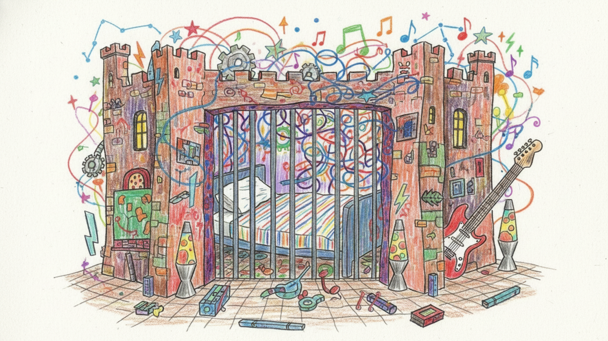
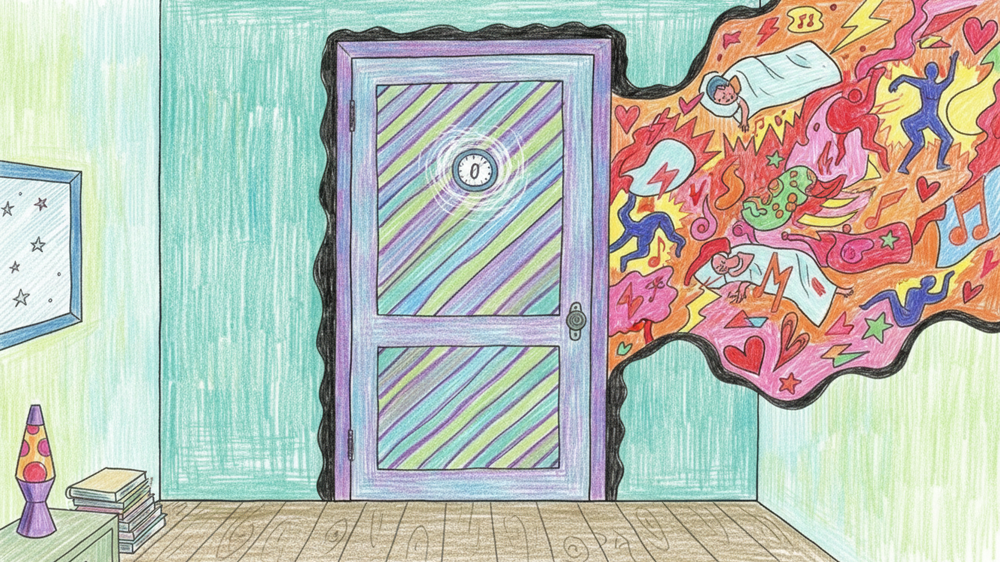
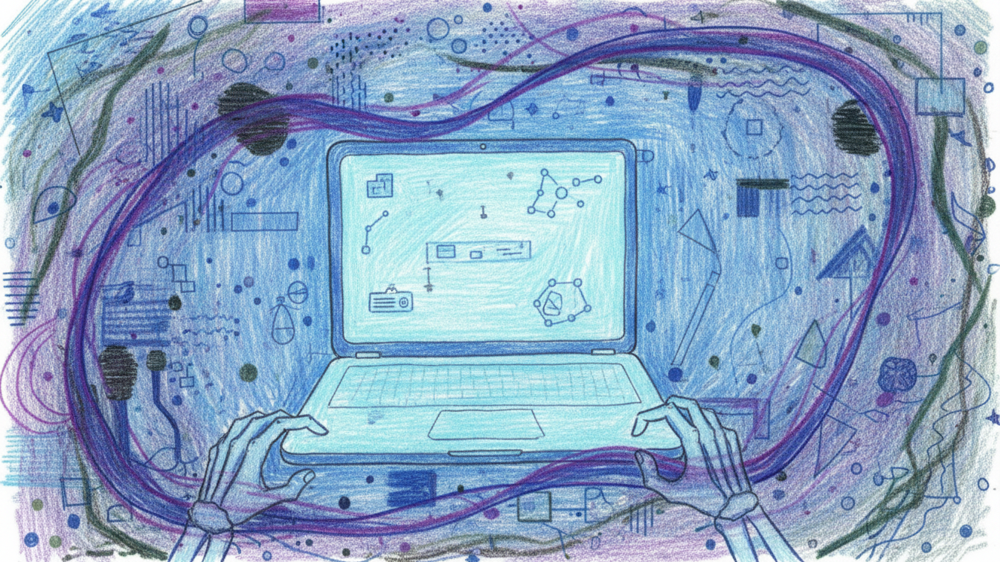
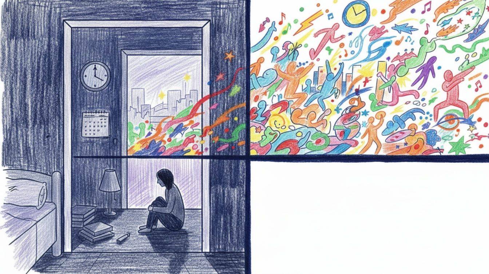
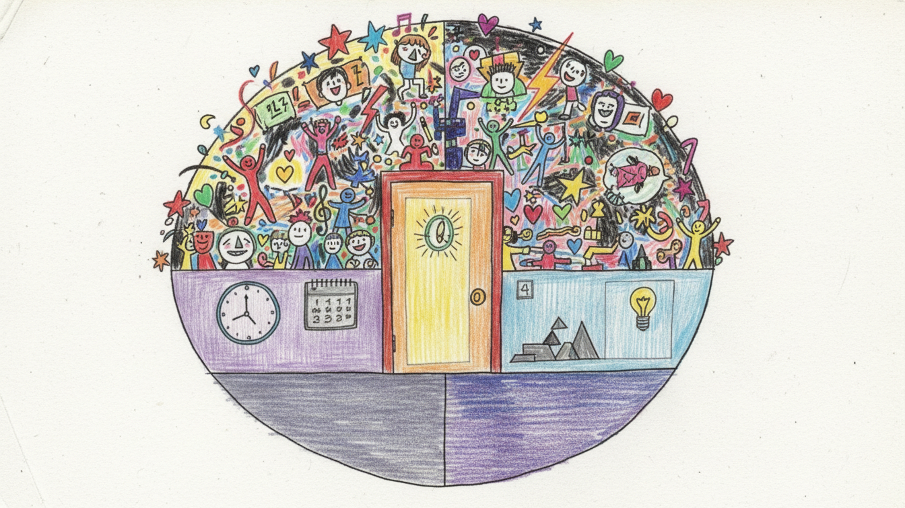

Home › Artwork
Artwork
Every scribble is intentional. Not because I know what I'm drawing. But because the chaos on paper = the chaos in my head.







Some of this is hand-drawn. Some isn't.
Authentic or fabricated — you decide.
Just like the music.